Last updated: 2018-10-09
Code version: acf38fa
First let’s import and process the data we need to use for this:
# import expression data
x3d7exp <- readRDS("../output/neighboring_genes/gene_reduced_3d7_abund.rds")
xhb3exp <- readRDS("../output/neighboring_genes/gene_reduced_hb3_abund.rds")
xitexp <- readRDS("../output/neighboring_genes/gene_reduced_it_abund.rds")
exp <- dplyr::bind_rows(x3d7exp,xhb3exp,xitexp)
rm(x3d7exp,xhb3exp,xitexp)
# import core genes for comparison
core_genes <- readr::read_tsv("../data/gene_lists/core_pf3d7_genes.txt",col_names=F)$X1
# only consider genes with a TPM of 5 within at least one sample
detected <- exp %>%
dplyr::filter(gene_id %in% core_genes) %>%
dplyr::group_by(gene_id, strain) %>%
dplyr::summarise(n = sum(TPM >= 5)) %>%
dplyr::mutate(on = ifelse(n > 0, 1, 0)) %>%
dplyr::ungroup() %>%
dplyr::select(-n)
on3d7 <- detected %>% dplyr::filter(strain == "3d7" & on == 1) %$% gene_id
onhb3 <- detected %>% dplyr::filter(strain == "hb3" & on == 1) %$% gene_id
onit <- detected %>% dplyr::filter(strain == "it" & on == 1) %$% gene_id
on3d7hb3 <- intersect(on3d7,onhb3)
on3d7it <- intersect(on3d7,onit)
onhb3it <- intersect(onhb3,onit)
# create a list of all genes on between strains
onall <- Reduce(intersect, list(on3d7, onhb3, onit))We also only want to consider genes with a decent amplitude to remove genes that are constitutively on:
amps <- exp %>%
dplyr::filter(gene_id %in% onall) %>%
dplyr::group_by(gene_id, strain) %>%
dplyr::summarise(min=min(TPM),max=max(TPM)) %>%
dplyr::mutate(amp=max/(min+1)) %>%
dplyr::ungroup()
amps <- amps %>% dplyr::inner_join(as.data.frame(org.Pf.plasmoGENENAME),by="gene_id")
g <- amps %>%
dplyr::mutate(strain = toupper(strain)) %>%
ggplot(aes(x=amp,group=strain,color=strain)) +
geom_line(stat="density",size=1.5) +
fill_colors +
outline_colors +
xlab("Amplitude") +
ylab("Density") +
scale_x_continuous(trans="log10",
breaks=c(1,10,100,1000,10000),
labels=trans_format('log10',math_format(10^.x))) +
theme(panel.grid = element_line(size=1),
legend.title=element_blank(),
axis.line.x=element_line(size=0.5),
axis.line.y=element_line(size=0.5)) +
panel_border(colour="black",size=0.75)
cowplot::save_plot("../output/differential_phase/amps.svg",g)
cowplot::save_plot("../output/differential_phase/amps.png",g)
print(g)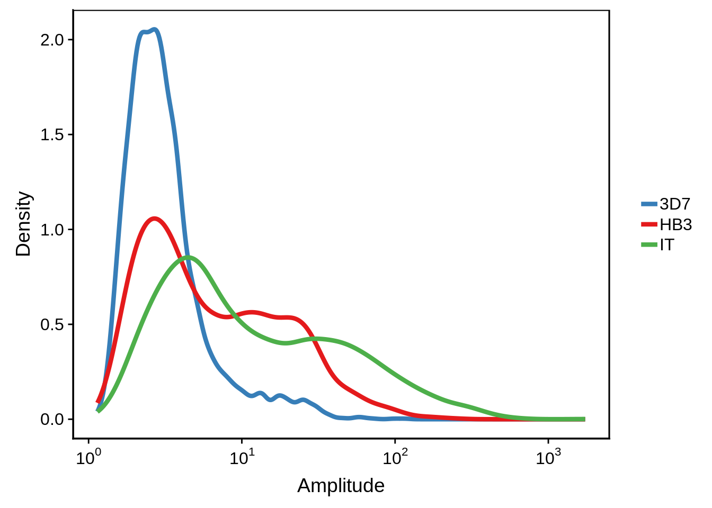
In Broadbent et al. they generate a circular plot to represent the different timepoints as x and y coordinates following dimensional reduction using multidimensional scaling. Prior to this we need to correct for impure Plasmodium cell populations as demonstrated in the following plot:
wide_uncorrected <- exp %>%
dplyr::filter(gene_id %in% onall & gene_id %in% high_amp) %>%
dplyr::group_by(gene_id,strain) %>%
dplyr::summarise(m=mean(TPM)) %>%
dplyr::inner_join(exp) %>%
dplyr::mutate(norm_tpm=(((TPM/m)-mean(TPM/m))/sd(TPM/m))) %>%
dplyr::select(gene_id,tp,norm_tpm,strain) %>%
dplyr::ungroup() %>%
tidyr::unite(tp_strain, tp, strain, sep = "-") %>%
dplyr::select(tp_strain, norm_tpm, gene_id) %>%
tidyr::spread(tp_strain, norm_tpm) %>%
dplyr::select(-gene_id)
d <- as.dist((1 - cor(wide_uncorrected))/2)
fit <- MASS::isoMDS(d, k = 2)initial value 6.803612
iter 5 value 5.340021
iter 10 value 5.178667
iter 10 value 5.174423
iter 10 value 5.172857
final value 5.172857
convergedtimepoint_phase <- as.data.frame(fit$points)
timepoint_phase$rows <- rownames(fit$points)
timepoint_phase <- timepoint_phase %>%
tidyr::separate(col=rows, into=c("tp","strain"), sep="-") %>%
dplyr::rename(x=V1,y=V2)
g <- timepoint_phase %>%
ggplot(aes(x=x,y=y,label=tp,color=toupper(strain))) +
geom_text(check_overlap=T,nudge_x=0.05) +
ggtitle("Non-Corrected MDS Plot") +
panel_border(colour="black",size=1) +
theme(panel.grid = element_line(size=1)) +
outline_colors
cowplot::save_plot("../output/differential_phase/uncorrected_timepoint_mds.svg",g)
cowplot::save_plot("../output/differential_phase/uncorrected_timepoint_mds.png",g)
print(g)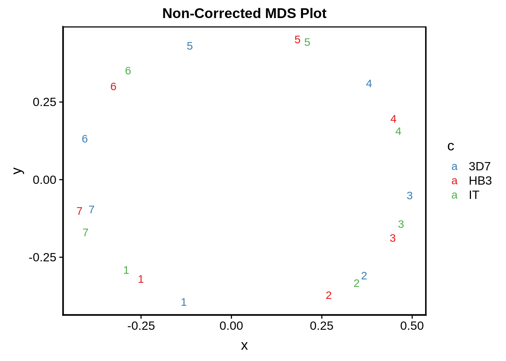
Although it doesn’t look terrible, there are times when it seems that 3D7 seems to somehow “get ahead” of HB3 and IT in terms of the IDC developmental timepoint. We tried to correct for this by locally realigning time points to the 3D7 53 time point microarray expression data set and predicting the expression values following local realignment.
A “local realignment” refers to adjusting each time point individually whereas a “global realignment” refers to use a descriptive statistic such as the mean or median shift to globally shift all expression values by the same amount.
# filter out undetected genes and genes with low amplitudes
# mean normalize and scale TPMs
# group observations accordingly
# use periodic spline to predict expression levels for 53 time points
pred_exp1 <- exp %>%
dplyr::filter(gene_id %in% onall & gene_id %in% high_amp) %>%
dplyr::group_by(gene_id,strain) %>%
dplyr::summarise(m=mean(TPM)) %>%
dplyr::inner_join(exp, by = c("gene_id","strain")) %>%
dplyr::mutate(norm_tpm=(((TPM/m)-mean(TPM/m))/sd(TPM/m))) %>%
dplyr::select(gene_id,tp,norm_tpm,strain) %>%
dplyr::ungroup() %>%
dplyr::rowwise() %>%
dplyr::mutate(hpi=ifelse(tp==1,1,
if(tp==2){8}
else if(tp==3){16}
else if(tp==4){24}
else if(tp==5){32}
else if(tp==6){40}
else{48})) %>%
dplyr::ungroup() %>%
dplyr::group_by(gene_id,strain) %>%
dplyr::do(pred = predict(splines::periodicSpline(norm_tpm ~ hpi, ., period = 48), seq(1,53,1)))
pred_exp2 <- apply(pred_exp1, 1, function(row) {list(gene_id=row[[1]],strain=row[[2]],x=row[[3]][[1]],y=row[[3]][[2]])})
pred_exp <- do.call(dplyr::bind_rows,
lapply(pred_exp2, function(x) {
tibble::tibble(
gene_id=rep(x[[1]],53),
strain=rep(x[[2]],53),
tp=x[[3]],
exp=x[[4]])}))
rm(pred_exp1,pred_exp2)
# import and format array datta
array_3d7 <- read.delim("../data/array_correlations/selected_3d7array_foldchanges_v3_geneids.txt") %>%
tibble::as_tibble()
dups <- as.character(array_3d7$GeneID[duplicated(array_3d7 %$% GeneID)])
array_3d7 <- array_3d7 %>%
dplyr::filter(GeneID %nin% dups) %>%
tidyr::gather(tp,exp,-GeneID) %>%
dplyr::rename(gene_id = GeneID)
array_3d7$gene_id <- as.character(array_3d7$gene_id)
array_3d7 <- array_3d7 %>%
dplyr::mutate(tp = ifelse(as.numeric(stringr::str_replace_all(tp, "Timepoint.","")) > 9, paste0("array_",stringr::str_replace_all(tp, "Timepoint.","")), paste0("array_0",stringr::str_replace_all(tp, "Timepoint.",""))))
# format predicted expression
exp_3d7 <- pred_exp %>% filter(strain == "3d7") %>% dplyr::select(-strain)
exp_hb3 <- pred_exp %>% filter(strain == "hb3") %>% dplyr::select(-strain)
exp_it <- pred_exp %>% filter(strain == "it") %>% dplyr::select(-strain)
exp_3d7$tp <- ifelse(exp_3d7$tp > 9, paste(paste0("rnaseq_",exp_3d7$tp)), paste(paste0("rnaseq_0",exp_3d7$tp)))
exp_hb3$tp <- ifelse(exp_hb3$tp > 9, paste(paste0("rnaseq_",exp_hb3$tp)), paste(paste0("rnaseq_0",exp_hb3$tp)))
exp_it$tp <- ifelse(exp_it$tp > 9, paste(paste0("rnaseq_",exp_it$tp)), paste(paste0("rnaseq_0",exp_it$tp)))# perform transcriptome realignment
realign_transcriptome <- function(rnaseq,array,strain) {
wide_array <- tidyr::spread(array,tp,exp)
wide_rnaseq <- tidyr::spread(rnaseq,tp,exp)
joined <- inner_join(wide_rnaseq, wide_array, by = "gene_id")
best_cor <- max.col(t(cor(joined[,2:54],joined[,55:107],use="na.or.complete")))
new_wide_rnaseq <- wide_rnaseq[c(1,best_cor[c(1,8,16,24,32,40,48)])]
colnames(new_wide_rnaseq) <- c("gene_id",1,8,16,24,32,40,48)
tmp <- new_wide_rnaseq %>%
tidyr::gather(tp,exp,-gene_id) %>%
dplyr::group_by(gene_id) %>%
dplyr::do(fit = predict(splines::periodicSpline(exp ~ tp, ., period = 48), seq(1,48,1)))
tmp <- apply(tmp, 1, function(row) {list(gene_id=row[[1]],x=row[[2]][[1]],y=row[[2]][[2]])})
tmp <- do.call(dplyr::bind_rows,
lapply(tmp, function(x) {
tibble::tibble(gene_id=rep(x[[1]],48),
tp=x[[2]],
exp=x[[3]])}))
out <- dplyr::mutate(tmp,strain=strain)
return(out)
}
aligned_3d7 <- realign_transcriptome(exp_3d7,array_3d7,"3d7")
aligned_hb3 <- realign_transcriptome(exp_hb3,array_3d7,"hb3")
aligned_it <- realign_transcriptome(exp_it,array_3d7,"it")
final <- dplyr::bind_rows(aligned_3d7,aligned_hb3,aligned_it) %>%
dplyr::filter(tp %in% c(1,8,16,24,32,40,48))
wide_corrected <- final %>%
tidyr::unite(tp_strain, tp, strain) %>%
dplyr::select(gene_id, tp_strain, exp) %>%
tidyr::spread(tp_strain, exp) %>%
dplyr::select(-gene_id)
d <- as.dist((1 - cor(wide_corrected))/2)
fit <- MASS::isoMDS(d+0.0000001, k = 2)initial value 9.243506
final value 8.112635
convergeddfit <- as.data.frame(fit$points)
dfit$tp_strain <- rownames(dfit)
rownames(dfit) <- NULL
g <- dfit %>%
tidyr::separate(tp_strain, c("tp" ,"strain"), "_") %>%
ggplot(aes(x=V1,y=V2,label=tp,color=toupper(strain))) +
geom_text(check_overlap=F,nudge_x=0.05) +
ggtitle("Locally Shifted MDS Plot") +
panel_border(colour="black",size=1) +
theme(panel.grid = element_line(size=1)) +
outline_colors
cowplot::save_plot("../output/differential_phase/corrected_timepoint_phase.svg",g)wide <- exp %>%
dplyr::filter(gene_id %in% onall & gene_id %in% high_amp) %>%
dplyr::group_by(gene_id,strain) %>%
dplyr::summarise(m=mean(TPM)) %>%
dplyr::inner_join(exp) %>%
dplyr::mutate(norm_tpm=(((TPM/m)-mean(TPM/m))/sd(TPM/m))) %>%
dplyr::select(gene_id,tp,norm_tpm,strain) %>%
dplyr::ungroup() %>%
tidyr::unite(gene_strain, gene_id, strain, sep = "-") %>%
dplyr::select(gene_strain, norm_tpm, tp) %>%
tidyr::spread(gene_strain, norm_tpm)
d <- as.dist((1 - cor(wide))/2)
fit <- MASS::isoMDS(d, k = 2)
gene_phase <- as.data.frame(fit$points)
gene_phase$rows <- rownames(fit$points)
gene_phase <- gene_phase %>%
tidyr::separate(col=rows, into=c("gene_id","strain"), sep="-") %>%
dplyr::rename(x=V1,y=V2)
gene_phase$phase <- apply(gene_phase[,1:2], 1, function(x) {atan2(x[1], x[2])})
rownames(gene_phase) <- NULL
gene_phase <- gene_phase %>%
dplyr::select(gene_id,strain,x,y,phase)gene_phase <- readr::read_tsv("../output/differential_phase/gene_phase.tsv")
# Prepare phase shifts between strains
s <- gene_phase %>%
dplyr::select(gene_id, strain, phase) %>%
tidyr::spread(strain, phase) %>%
dplyr::rowwise() %>%
dplyr::mutate(`3D7 - HB3` = min(c(abs(`3d7`-hb3),2*pi-abs(`3d7`-hb3))),
`3D7 - IT` = min(c(abs(`3d7`-it),2*pi-abs(`3d7`-it))),
`HB3 - IT` = min(c(abs(hb3-it),2*pi-abs(hb3-it))))
# plot histograms
g <- s %>%
dplyr::ungroup() %>%
dplyr::filter(gene_id %in% onall) %>%
dplyr::select(-`3d7`,-hb3,-it) %>%
tidyr::gather(strains,diff,-gene_id) %>%
dplyr::filter(strains == "3D7 - HB3") %>%
ggplot(aes(x=diff)) +
geom_histogram(color="grey70") +
xlab("Phase Difference") +
ylab("Frequency") +
panel_border(colour="black",size=1) +
scale_x_continuous(limits=c(0,3),breaks=c(0,pi/2,pi),labels=c("0","pi/2","pi")) +
theme(axis.line.x=element_line(size=0),axis.line.y=element_line(size=0)) +
ggtitle("3D7 vs. HB3")
cowplot::save_plot("../output/3d7_hb3_phase_comparison_histogram.svg",g)
cowplot::save_plot("../output/3d7_hb3_phase_comparison_histogram.png",g)
print(g)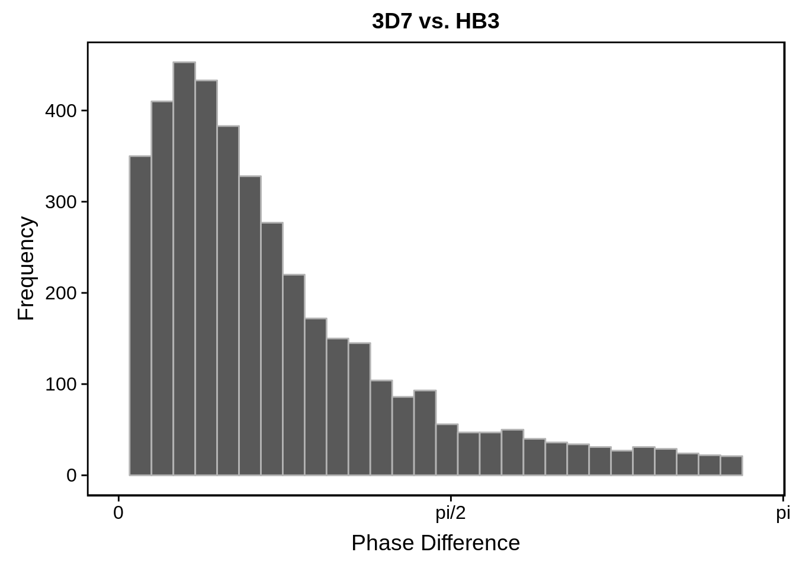
g <- s %>%
dplyr::ungroup() %>%
dplyr::filter(gene_id %in% onall) %>%
dplyr::select(-`3d7`,-hb3,-it) %>%
tidyr::gather(strains,diff,-gene_id) %>%
dplyr::filter(strains == "3D7 - IT") %>%
ggplot(aes(x=diff)) +
geom_histogram(color="grey70") +
xlab("Phase Difference") +
ylab("Frequency") +
panel_border(colour="black",size=1) +
scale_x_continuous(limits=c(0,3),breaks=c(0,pi/2,pi),labels=c("0","pi/2","pi")) +
theme(axis.line.x=element_line(size=0),axis.line.y=element_line(size=0)) +
ggtitle("3D7 vs. IT")
cowplot::save_plot("../output/3d7_it_phase_comparison_histogram.svg",g)
cowplot::save_plot("../output/3d7_it_phase_comparison_histogram.png",g)
print(g)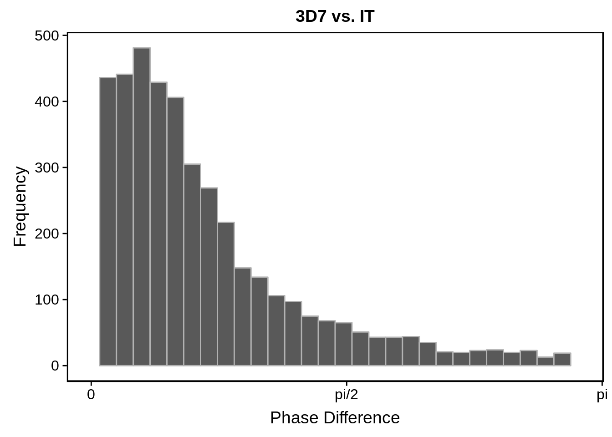
g <- s %>%
dplyr::ungroup() %>%
dplyr::filter(gene_id %in% onall) %>%
dplyr::select(-`3d7`,-hb3,-it) %>%
tidyr::gather(strains,diff,-gene_id) %>%
dplyr::filter(strains == "HB3 - IT") %>%
ggplot(aes(x=diff)) +
geom_histogram(color="grey70") +
xlab("Phase Difference") +
ylab("Frequency") +
panel_border(colour="black",size=1) +
scale_x_continuous(limits=c(0,3),breaks=c(0,pi/2,pi),labels=c("0","pi/2","pi")) +
theme(axis.line.x=element_line(size=0),axis.line.y=element_line(size=0)) +
ggtitle("HB3 vs. IT")
cowplot::save_plot("../output/hb3_it_phase_comparison_histogram.svg",g)
cowplot::save_plot("../output/hb3_it_phase_comparison_histogram.png",g)
print(g)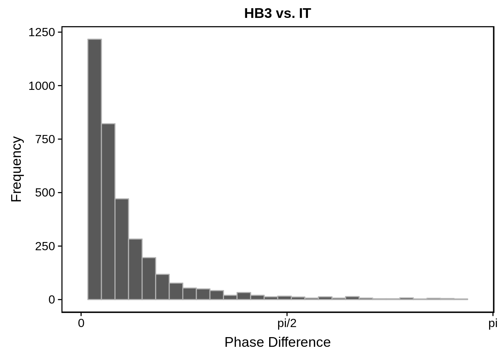
# plot scatterplots
g <- s %>%
dplyr::filter(gene_id %in% onall) %>%
ggplot(aes(y=`3d7`,x=hb3)) +
geom_point(alpha=0.50,color="grey50") +
scale_x_continuous(breaks = c()) +
scale_y_continuous(breaks = c()) +
geom_hline(yintercept = 0) +
geom_vline(xintercept = 0) +
theme(axis.line = element_blank())
cowplot::save_plot("../output/3d7_hb3_phase_comparison_scatter.svg",g)
cowplot::save_plot("../output/3d7_hb3_phase_comparison_scatter.png",g)
print(g)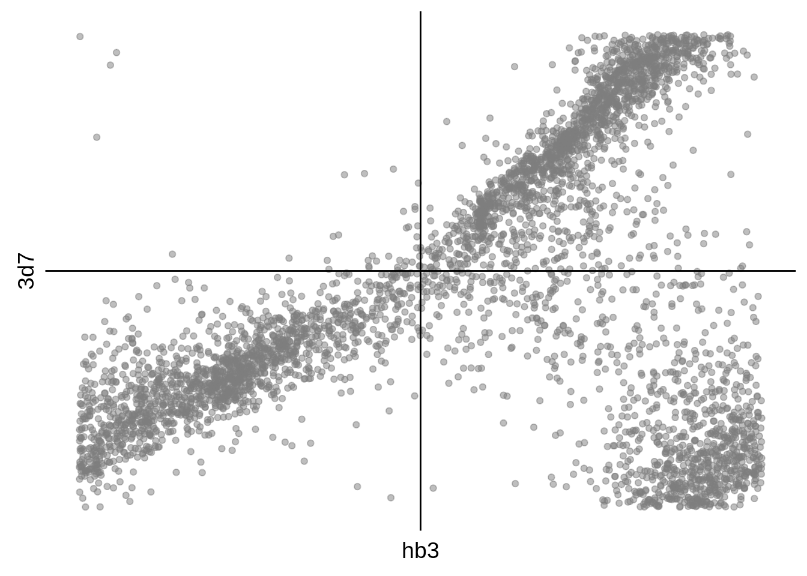
g <- s %>%
dplyr::filter(gene_id %in% onall) %>%
ggplot(aes(y=`3d7`,x=it)) +
geom_point(alpha=0.50,color="grey50") +
scale_x_continuous(breaks = c()) +
scale_y_continuous(breaks = c()) +
geom_hline(yintercept = 0) +
geom_vline(xintercept = 0) +
theme(axis.line = element_blank())
cowplot::save_plot("../output/3d7_it_phase_comparison_scatter.svg",g)
cowplot::save_plot("../output/3d7_it_phase_comparison_scatter.png",g)
print(g)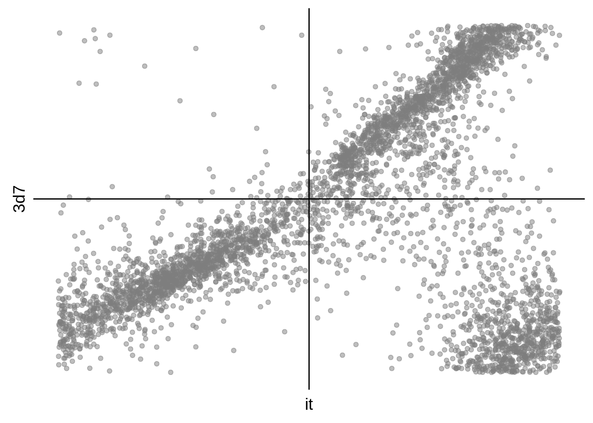
g <- s %>%
dplyr::filter(gene_id %in% onall) %>%
ggplot(aes(y=hb3,x=it)) +
geom_point(alpha=0.50,color="grey50") +
scale_x_continuous(breaks = c()) +
scale_y_continuous(breaks = c()) +
geom_hline(yintercept = 0) +
geom_vline(xintercept = 0) +
theme(axis.line = element_blank())
cowplot::save_plot("../output/hb3_it_phase_comparison_scatter.svg",g)
cowplot::save_plot("../output/hb3_it_phase_comparison_scatter.png",g)
print(g)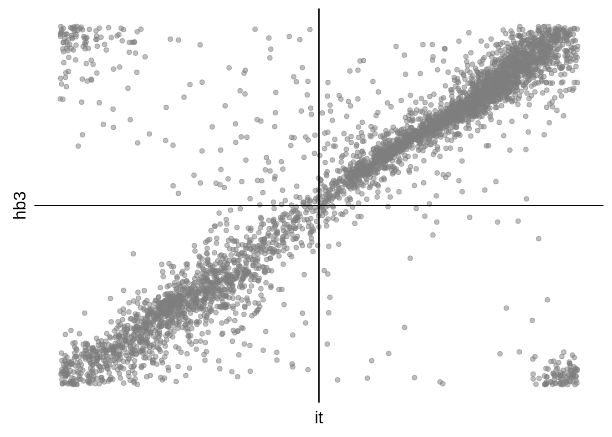
# calculate median that 3D7 is off by
m <- s %>%
rowwise() %>%
mutate(offset = min(c(abs(`3d7`-mean(c(hb3,it))),2*pi-abs(`3d7`-mean(c(hb3,it)))))) %$%
median(offset)
# Recalculate phase shifts
s <- s %>%
mutate(`3d7` = ifelse(`3d7` > 0, `3d7` - m, `3d7` + m)) %>%
mutate(`3D7 - HB3` = min(c(abs(`3d7`-hb3),2*pi-abs(`3d7`-hb3))),
`3D7 - IT` = min(c(abs(`3d7`-it),2*pi-abs(`3d7`-it))),
`HB3 - IT` = min(c(abs(hb3-it),2*pi-abs(hb3-it))))
# plot histograms
g <- s %>%
dplyr::ungroup() %>%
dplyr::filter(gene_id %in% onall) %>%
dplyr::select(-`3d7`,-hb3,-it) %>%
tidyr::gather(strains,diff,-gene_id) %>%
dplyr::filter(strains == "3D7 - HB3") %>%
ggplot(aes(x=diff)) +
geom_histogram(color="grey70") +
xlab("Phase Difference") +
ylab("Frequency") +
panel_border(colour="black",size=1) +
scale_x_continuous(limits=c(0,3),breaks=c(0,pi/2,pi),labels=c("0","pi/2","pi")) +
theme(axis.line.x=element_line(size=0),axis.line.y=element_line(size=0)) +
ggtitle("3D7 vs. HB3")
cowplot::save_plot("../output/corrected_3d7_hb3_phase_comparison_histogram.svg",g)
cowplot::save_plot("../output/corrected_3d7_hb3_phase_comparison_histogram.png",g)
print(g)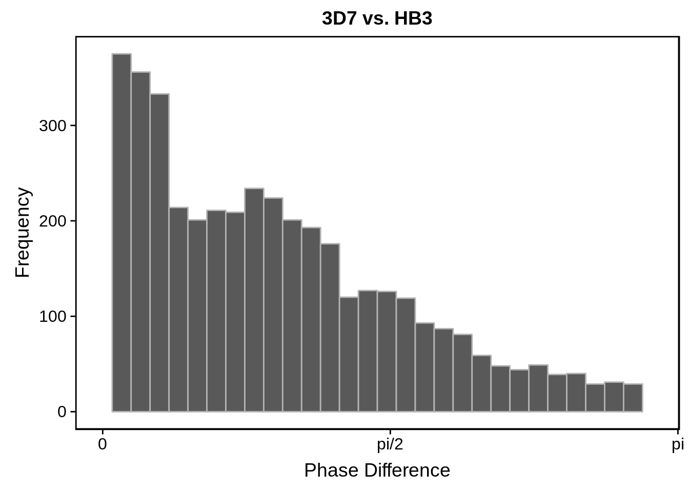
g <- s %>%
dplyr::ungroup() %>%
dplyr::filter(gene_id %in% onall) %>%
dplyr::select(-`3d7`,-hb3,-it) %>%
tidyr::gather(strains,diff,-gene_id) %>%
dplyr::filter(strains == "3D7 - IT") %>%
ggplot(aes(x=diff)) +
geom_histogram(color="grey70") +
xlab("Phase Difference") +
ylab("Frequency") +
panel_border(colour="black",size=1) +
scale_x_continuous(limits=c(0,3),breaks=c(0,pi/2,pi),labels=c("0","pi/2","pi")) +
theme(axis.line.x=element_line(size=0),axis.line.y=element_line(size=0)) +
ggtitle("3D7 vs. IT")
cowplot::save_plot("../output/corrected_3d7_it_phase_comparison_histogram.svg",g)
cowplot::save_plot("../output/corrected_3d7_it_phase_comparison_histogram.png",g)
print(g)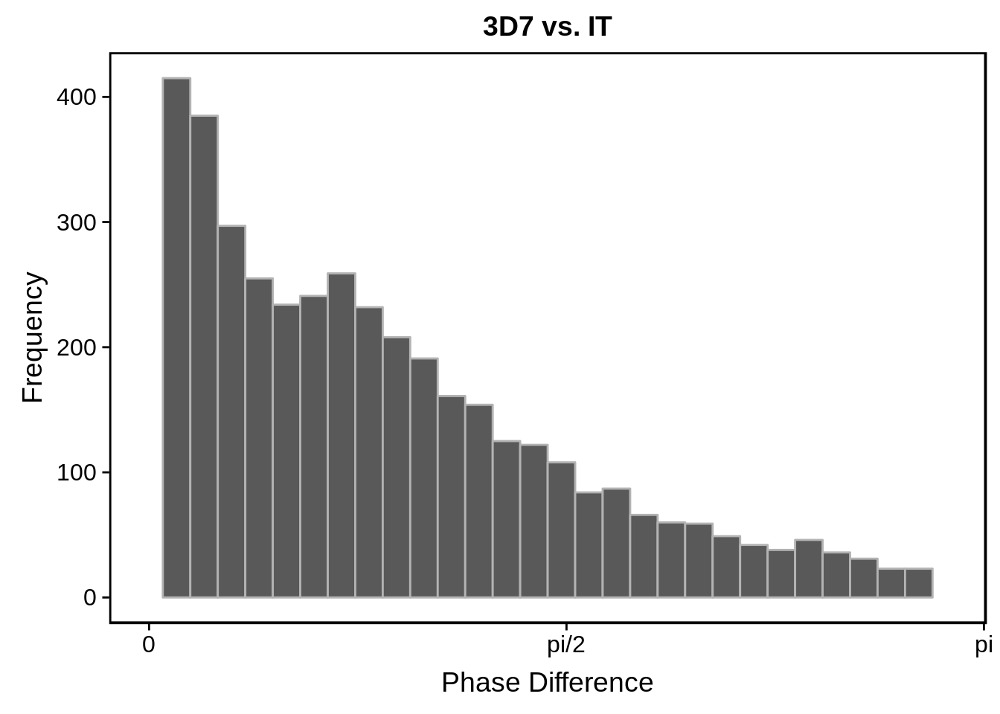
g <- s %>%
dplyr::ungroup() %>%
dplyr::filter(gene_id %in% onall) %>%
dplyr::select(-`3d7`,-hb3,-it) %>%
tidyr::gather(strains,diff,-gene_id) %>%
dplyr::filter(strains == "HB3 - IT") %>%
ggplot(aes(x=diff)) +
geom_histogram(color="grey70") +
xlab("Phase Difference") +
ylab("Frequency") +
panel_border(colour="black",size=1) +
scale_x_continuous(limits=c(0,3),breaks=c(0,pi/2,pi),labels=c("0","pi/2","pi")) +
theme(axis.line.x=element_line(size=0),axis.line.y=element_line(size=0)) +
ggtitle("HB3 vs. IT")
cowplot::save_plot("../output/corrected_hb3_it_phase_comparison_histogram.svg",g)
cowplot::save_plot("../output/corrected_hb3_it_phase_comparison_histogram.png",g)
print(g)# plot scatterplots
g <- s %>%
dplyr::filter(gene_id %in% onall) %>%
ggplot(aes(y=`3d7`,x=hb3)) +
geom_point(alpha=0.50,color="grey50") +
scale_x_continuous(breaks = c()) +
scale_y_continuous(breaks = c()) +
geom_hline(yintercept = 0) +
geom_vline(xintercept = 0) +
theme(axis.line = element_blank())
cowplot::save_plot("../output/corrected_3d7_hb3_phase_comparison_scatter.svg",g)
cowplot::save_plot("../output/corrected_3d7_hb3_phase_comparison_scatter.png",g)
print(g)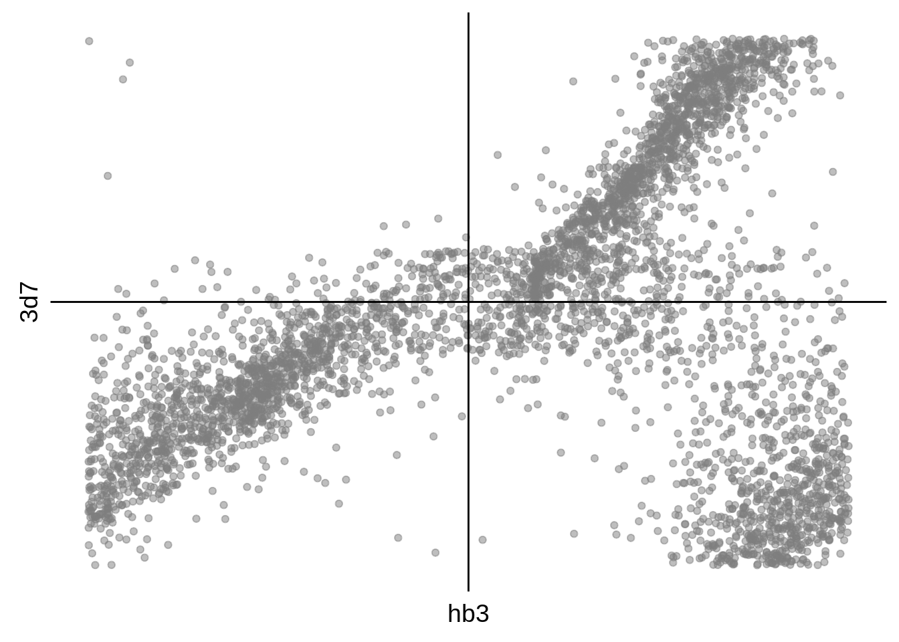
g <- s %>%
dplyr::filter(gene_id %in% onall) %>%
ggplot(aes(y=`3d7`,x=it)) +
geom_point(alpha=0.50,color="grey50") +
scale_x_continuous(breaks = c()) +
scale_y_continuous(breaks = c()) +
geom_hline(yintercept = 0) +
geom_vline(xintercept = 0) +
theme(axis.line = element_blank())
cowplot::save_plot("../output/corrected_3d7_it_phase_comparison_scatter.svg",g)
cowplot::save_plot("../output/corrected_3d7_it_phase_comparison_scatter.png",g)
print(g)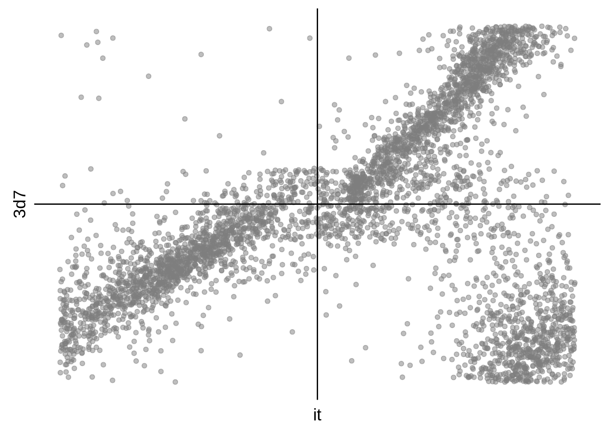
g <- s %>%
dplyr::filter(gene_id %in% onall) %>%
ggplot(aes(y=hb3,x=it)) +
geom_point(alpha=0.50,color="grey50") +
scale_x_continuous(breaks = c()) +
scale_y_continuous(breaks = c()) +
geom_hline(yintercept = 0) +
geom_vline(xintercept = 0) +
theme(axis.line = element_blank())
cowplot::save_plot("../output/corrected_hb3_it_phase_comparison_scatter.svg",g)
cowplot::save_plot("../output/corrected_hb3_it_phase_comparison_scatter.png",g)
print(g)R version 3.5.0 (2018-04-23)
Platform: x86_64-pc-linux-gnu (64-bit)
Running under: Gentoo/Linux
Matrix products: default
BLAS: /usr/local/lib64/R/lib/libRblas.so
LAPACK: /usr/local/lib64/R/lib/libRlapack.so
locale:
[1] LC_CTYPE=en_US.UTF-8 LC_NUMERIC=C
[3] LC_TIME=en_US.UTF-8 LC_COLLATE=en_US.UTF-8
[5] LC_MONETARY=en_US.UTF-8 LC_MESSAGES=en_US.UTF-8
[7] LC_PAPER=en_US.UTF-8 LC_NAME=C
[9] LC_ADDRESS=C LC_TELEPHONE=C
[11] LC_MEASUREMENT=en_US.UTF-8 LC_IDENTIFICATION=C
attached base packages:
[1] parallel stats4 stats graphics grDevices utils datasets
[8] methods base
other attached packages:
[1] gdtools_0.1.7
[2] bindrcpp_0.2.2
[3] BSgenome.Pfalciparum.PlasmoDB.v24_1.0
[4] BSgenome_1.48.0
[5] rtracklayer_1.40.6
[6] Biostrings_2.48.0
[7] XVector_0.20.0
[8] GenomicRanges_1.32.7
[9] GenomeInfoDb_1.16.0
[10] org.Pf.plasmo.db_3.6.0
[11] AnnotationDbi_1.42.1
[12] IRanges_2.14.12
[13] S4Vectors_0.18.3
[14] Biobase_2.40.0
[15] BiocGenerics_0.26.0
[16] scales_1.0.0
[17] cowplot_0.9.3
[18] magrittr_1.5
[19] forcats_0.3.0
[20] stringr_1.3.1
[21] dplyr_0.7.6
[22] purrr_0.2.5
[23] readr_1.1.1
[24] tidyr_0.8.1
[25] tibble_1.4.2
[26] ggplot2_3.0.0
[27] tidyverse_1.2.1
loaded via a namespace (and not attached):
[1] nlme_3.1-137 bitops_1.0-6
[3] matrixStats_0.54.0 lubridate_1.7.4
[5] bit64_0.9-7 httr_1.3.1
[7] rprojroot_1.3-2 tools_3.5.0
[9] backports_1.1.2 R6_2.3.0
[11] DBI_1.0.0 lazyeval_0.2.1
[13] colorspace_1.3-2 withr_2.1.2
[15] tidyselect_0.2.4 bit_1.1-14
[17] compiler_3.5.0 git2r_0.23.0
[19] cli_1.0.1 rvest_0.3.2
[21] xml2_1.2.0 DelayedArray_0.6.6
[23] labeling_0.3 digest_0.6.17
[25] Rsamtools_1.32.3 svglite_1.2.1
[27] rmarkdown_1.10 R.utils_2.7.0
[29] pkgconfig_2.0.2 htmltools_0.3.6
[31] rlang_0.2.2 readxl_1.1.0
[33] rstudioapi_0.8 RSQLite_2.1.1
[35] bindr_0.1.1 jsonlite_1.5
[37] BiocParallel_1.14.2 R.oo_1.22.0
[39] RCurl_1.95-4.11 GenomeInfoDbData_1.1.0
[41] Matrix_1.2-14 Rcpp_0.12.19
[43] munsell_0.5.0 R.methodsS3_1.7.1
[45] stringi_1.2.4 yaml_2.2.0
[47] MASS_7.3-49 SummarizedExperiment_1.10.1
[49] zlibbioc_1.26.0 plyr_1.8.4
[51] grid_3.5.0 blob_1.1.1
[53] crayon_1.3.4 lattice_0.20-35
[55] splines_3.5.0 haven_1.1.2
[57] hms_0.4.2 knitr_1.20
[59] pillar_1.3.0 XML_3.98-1.16
[61] glue_1.3.0 evaluate_0.11
[63] modelr_0.1.2 cellranger_1.1.0
[65] gtable_0.2.0 assertthat_0.2.0
[67] broom_0.5.0 GenomicAlignments_1.16.0
[69] memoise_1.1.0 workflowr_1.1.1 This R Markdown site was created with workflowr